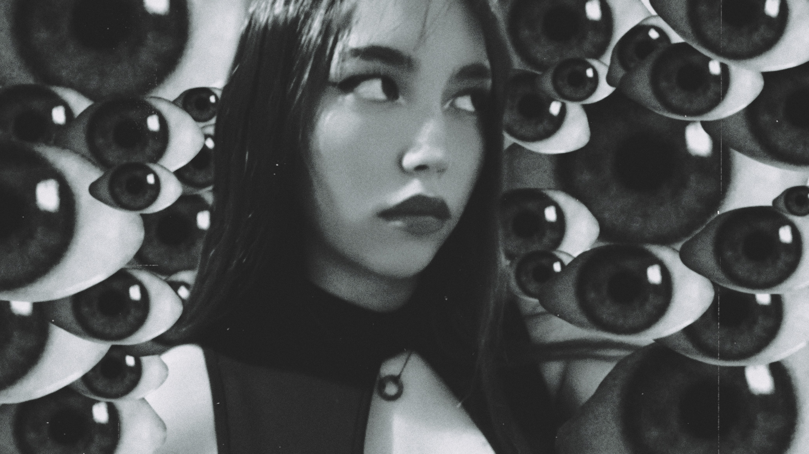

Nashla Arriaga
Soy Nashla Johanna Arriaga González una artista multidisciplinaria radicada actualmente en el Estado de México, aspiró a establecerme en el mundo del cine como directora y guionista. Desde muy temprana edad sentí una profunda pasión por la creatividad, lo que me llevo a explorar diversos medios artísticos. Mi elección de medios no es arbitraria, cada forma de arte que practico, permite comunicar y conectar con otros de maneras significativas. Como artista, mi práctica creativa se nutre de mi experiencia y de las interacciones con el mundo que me rodea. Disfruto ejemplificar mis deseos a través de una variedad de medios, desde la fotografía y el cortometraje hasta el guión, el dibujo, el collage y la pintura. En cada obra, busco constantemente mi identidad, explorando nuevos horizontes, facetas de mi misma y formas de expresión artística. Me apasiona explorar la mente humana y sus trastornos en mis proyectos, abordó mis fobias personales y el terror psicológico con un enfoque introspectivo y desafiante. Siempre estoy abierta a nuevas formas de expresión y a seguir explorando los límites de mi creatividad. Tengo experiencia en montaje y postproducción, participé como asistente general en la galería “Metavisiones del ser” donde hice trabajo de postproducción, edición, montaje y documentación. Cuento con conocimientos en redacción creativa y comunicación, producción cinematográfica, diseño y creación de contenidos y páginas web.
About me
I am Nashla Johanna Arriaga González, a multidisciplinary artist currently based in the State of Mexico, aspiring to establish myself as a film director and screenwriter. From a young age, I have been driven by a deep passion for creativity, leading me to explore various artistic mediums. My choice of media is intentional, as each form of art I practice allows me to communicate and connect with others in meaningful ways. My creative practice is nourished by my personal experiences and interactions with the world around me. I enjoy expressing my desires through a variety of media, including photography, short films, screenwriting, drawing, collage, and painting. In every work, I am constantly searching for my identity, exploring new horizons, facets of myself, and modes of artistic expression. I am particularly passionate about exploring the human mind and its disorders in my projects, addressing personal phobias and psychological terror with an introspective and challenging approach. I am always open to new forms of expression and continually seek to push the boundaries of my creativity. I have experience in editing and post-production, and I have participated as a general assistant in the “Metavisiones del ser” gallery, where I worked on post-production, editing, montage, and documentation. Additionally, I have knowledge in creative writing and communication, film production, design, and the creation of content and websites.